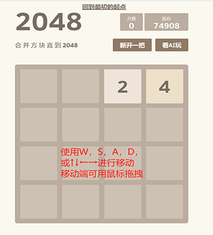
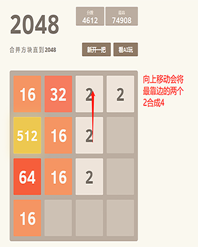
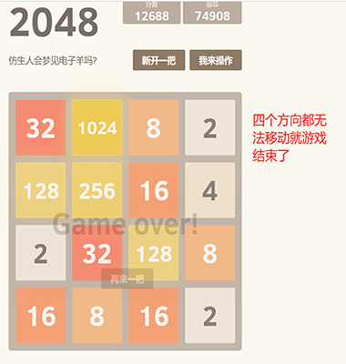
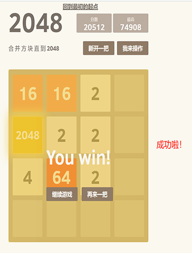

2048是同类游戏中较火的一款IOS游戏。玩法同网页版2048。有移动速度快，计时器，支持Game center，分享等功能。是益智小游戏，游戏的规则十分简单，是时下一款简单易上手的数字小游戏，但又十分虐心

游戏的规则很简单，你需要控制所有方块向同一个方向运动，两个相同数字方块撞在一起之后合并成为他们的和，每次操作之后会随机生成一个2或者4，最终得到一个“2048”的方块就算胜利了。

需要注意的是，为了保持最大数在角落，所有最大数可能移动的方向都不能再操作了，比如选择了左上角，那么就不能向右和向下移动其他的方块，这样操作的灵活性会相对减少，难度就会增加。这时，建议玩家除了选定一个角以外，再固定一条边，将大的数字放这条边上，这样就可以朝三个方向移动，比如选定左上角，填满最大数右边的所有方块，就可以朝上，左，右三个方向移动了。

在这样的游戏技巧下，本人使用博弈树对当期局面进行评估，让计算机算出一个最安全的方向，然后就向这个方向移动。利用计算机强大的计算能力，能够将下一步，下下步乃至更后面的结果都能计算出来，当然因为2和4是随机生成的，而且位置随机，所以在计算生成时每次都往最糟糕的局面猜测，以防万一。然后综合当前局面，在每次都能做出最安全的移动，这样就更容易合出2048。
看AI玩2048
来一把 2048